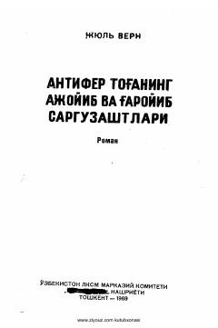

ATXazina izlab dengiz bo'ylab xavfli va qiziqarli sarguzashtlarga otlangan qahramonlar hikoyasi.
Jules Verning ushbu romanida jasur va matonatli qahramonlarning dengizdagi noma'lum orolga ko'milgan xazinani izlash yo'lidagi sarguzashtlari hikoya qilinadi. Qahramonlar o'z maqsadlariga erishish uchun turli xavf-xatarlarga duch kelib, do'stlik va muhabbat sinovlaridan o'tadilar.